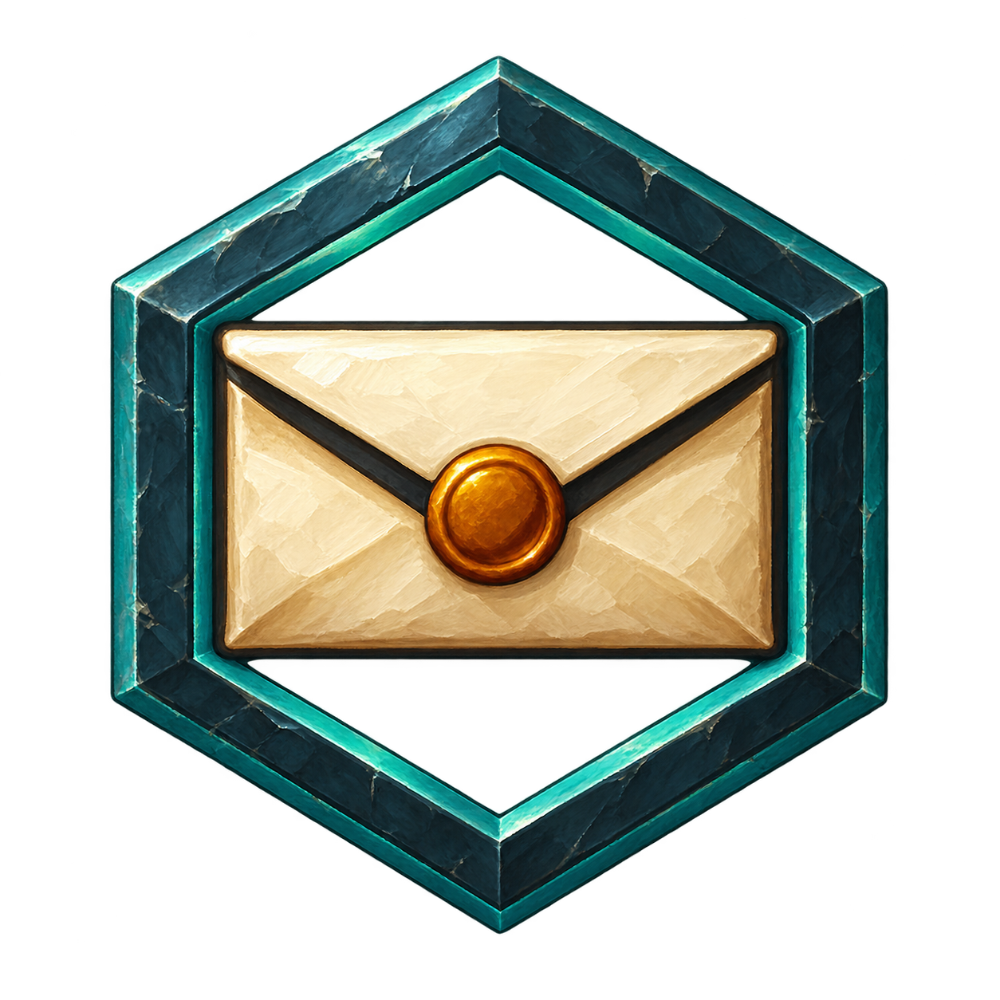

<!doctype html><html lang="zh-CN"><meta charset="utf-8"><meta name="viewport" content="width=device-width,initial-scale=1"><title>YiboMail · WoW 材质预览 · 待确认</title>
<style>*{box-sizing:border-box}body{margin:0;padding:30px;background:#10171b;color:#e8e8dc;font:15px "Microsoft YaHei",sans-serif}main{max-width:900px;margin:auto}h1{font-size:25px;margin:0 0 8px}p{line-height:1.7;color:#b0beb9;margin:0 0 20px}.status{color:#6dd5b8}.panel{background:#1c2025;border:1px solid #46504e;border-radius:8px;padding:22px}.compare{display:flex;align-items:center;gap:44px}.large{display:flex;flex-direction:column;gap:12px;align-items:center}.large img{width:128px;height:128px}.caption{font-size:12px;color:#aabbaf}.sizes{display:flex;gap:36px;align-items:center;margin:20px 0}.sample{display:flex;align-items:center;flex-direction:column;gap:12px;font-size:12px}.spec{font-size:14px;line-height:1.9;color:#b8cac5}.row{margin-top:18px;background:#15191d;border:1px solid #76654a;border-radius:4px;padding:12px;display:flex;align-items:center;gap:12px}.gold{color:#e9c67b}.foot{margin-top:22px;font-size:13px}.context{display:flex;gap:24px;margin-top:20px;align-items:center}.button{display:flex;align-items:center;justify-content:center;border:2px solid #76654a;background:#15191d;width:42px;height:42px;border-radius:50%}@media(max-width:680px){.compare{flex-direction:column;align-items:flex-start}}</style>
<main><h1>YiboMail · WoW 材质与光效</h1><p><span class="status">阶段 5 · 待确认</span><br>暖象牙色纸张、琥珀金封蜡、深青黑金属框与青绿识别边。</p>
<section class="panel"><div class="compare"><div class="large"><span class="caption">放大检查 · 材质草案</span></div><div><b>实际尺寸预览</b><div class="sizes"><div class="sample"><span>24 × 24</span></div><div class="sample"><span>32 × 32</span></div><div class="sample"><span>64 × 64</span></div></div><div class="spec">上左方向光 · 集中高光<br>纸张折面 / 封蜡厚度 / 金属切面<br>外围与外框内空隙透明</div></div></div>
<div class="row"><span class="gold">[Yibo] YiboMail</span><span class="caption">紧凑入口 · 24px</span></div><div class="context"><div class="button"></div><span class="caption">圆形入口底座 · 32px</span><span class="caption">已确认骨架 · 对照</span></div></section>
<p class="foot">请确认这版材质风格与小尺寸可读性。获批后进入像素级修整，检查边缘、断线与杂点。</p></main></html>
